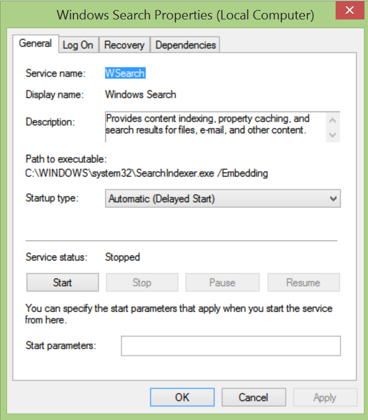

Exception from HRESULT: 0x80042019
An error message containing the error code 0x80042019 indicates an issue with searching _OneNote_pages for tags or text. The OneNote Tagging Kit uses the Windows Search service to quickly find _OneNote_pages. If regular search in OneNote(not in the Tagging Kit) does not work either, error 0x80042019 most likely has one of the following causes:
The Windows Search service is not running: To make sure that this service is configured properly and available, perform following steps:
Press
Start+R, type services.msc into the Run box that opened, and click OK. Note: TheStartkey is also known as the Windows key. It is usually the second button to the left of theSPACEbar on the keyboard.In the services window which just opened, scroll down to Windows Search and check that the service is running and configured for automatic start as shown in the screen shot below

If the Windows Search service is not running, or not configured for automatic start, right mouse click the service and select the Properties action. Make sure the service is configured as shown in the screenshot below and finally start the service by pressing the Start button:

The _OneNote_search index is corrupted: To repair the index please, try the fixes discussed in OneNote search broken